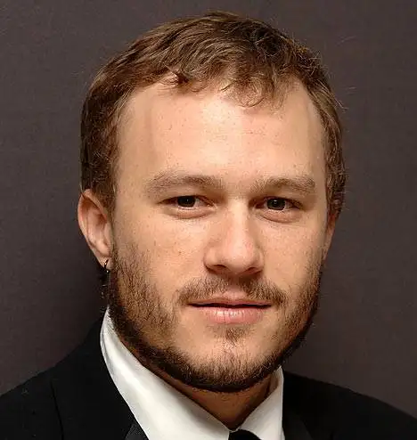
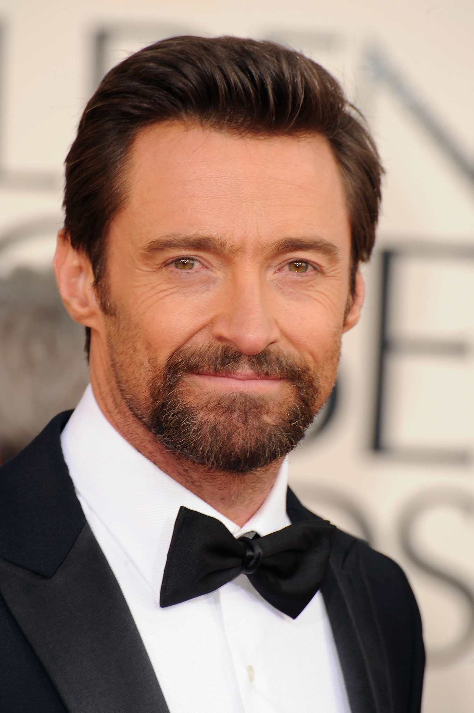

AC/DC are an Australian rock band formed in Sydney in 1973. Their music has been variously described as hard rock, blues rock and heavy metal, but the band calls it simply "rock and roll". They are cited as a formative influence on the new wave of British heavy metal bands.
Christopher Hemsworth AM (born 11 August 1983) is an Australian actor. He rose to prominence playing Kim Hyde in the Australian television series Home and Away (2004–2007) before beginning a film career in Hollywood. In the Marvel Cinematic Universe (MCU), Hemsworth starred as Thor in the 2011 film of the same name and reprised the role in several subsequent installments, which established him among the world's highest-paid actors.


Heath Andrew Ledger (4 April 1979 – 22 January 2008) was an Australian actor. After playing roles in several Australian television and film productions during the 1990s, he moved to the United States in 1998 to further develop his film career. His work consisted of 20 films in a variety of genres, including 10 Things I Hate About You (1999), The Patriot (2000), A Knight's Tale (2001), Monster's Ball (2001), Casanova (2005), Lords of Dogtown (2005), Brokeback Mountain (2005), Candy (2006), I'm Not There (2007), The Dark Knight (2008), and The Imaginarium of Doctor Parnassus (2009), the latter two of which were posthumously released. He also produced and directed music videos and aspired to be a film director.
Hugh Michael Jackman AC (born 12 October 1968) is an Australian actor. Beginning in theatre and television, Jackman landed his breakthrough role as Wolverine in the X-Men film franchise and the Marvel Cinematic Universe from X-Men (2000) to Deadpool & Wolverine (2024). Prominent on both screen and stage, he has received various accolades, including a Primetime Emmy Award, a Grammy Award and two Tony Awards, along with nominations for an Academy Award and a British Academy Film Award. Jackman was appointed a Companion of the Order of Australia in 2019.
